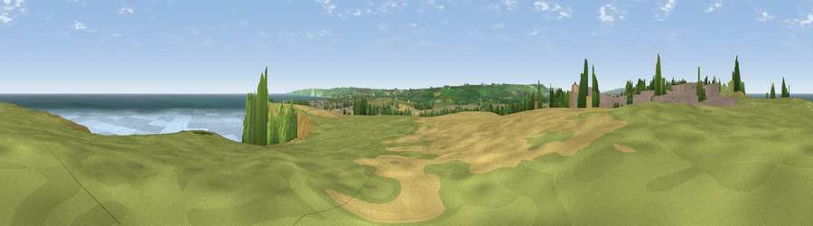

Viewpoint near Filey
#5068 in England · top 14% of its area beats it · near FileyThe view, rendered

A 360° render of this exact spot computed from the terrain model, tree cover and land cover — summer colours, afternoon light, calibrated against photographs of famous viewpoints. Real trees, hedges and buildings will differ in detail.
The panorama
Grey silhouette: terrain skyline in each direction (720 bearings, Earth curvature and refraction included). Dashed green: skyline with trees (+15 m) and buildings (+8 m) as obstacles. Blue strip: how far the ground is visible on each bearing.
Where the view opens
Wedge length = distance to the farthest visible ground on that bearing (vegetation-aware). Rings at 10, 25 and 50 km.
What fills the view
38% water · 35% grassland · 18% cropland · 6% woodland · 2% built-up
Angular shares of the visible panorama (visual magnitude), not map area. Landscape diversity 0.57 (0–1 Shannon).
Key numbers
More beautiful places nearby
The staircase of upgrades: each row has a higher view potential than everything closer. Driving times are estimates from straight-line distance, calibrated against real road routing — check an actual route before setting out.
| Place | Direction | Drive | Score |
|---|---|---|---|
| Viewpoint near Filey | NW · 1 km | ~2 min | 72.0 |
| Viewpoint near Osgodby | WNW · 2 km | ~6 min | 73.0 |
| Viewpoint near Osgodby | WNW · 5 km | ~10 min | 74.0 |
| Viewpoint near Osgodby | WNW · 6 km | ~12 min | 75.6 |
| Olivers Mount | NW · 7 km | ~15 min | 80.3 |
| Viewpoint near Ravenscar | NNW · 21 km | ~35 min | 82.7 |
| Viewpoint near Ravenscar | NNW · 22 km | ~37 min | 87.3 |
| Viewpoint near Ravenscar | NW · 24 km | ~39 min | 90.0 |
54.22981, -0.31635 · source: screening · position refined by local search. Computed location — check access rights before visiting.